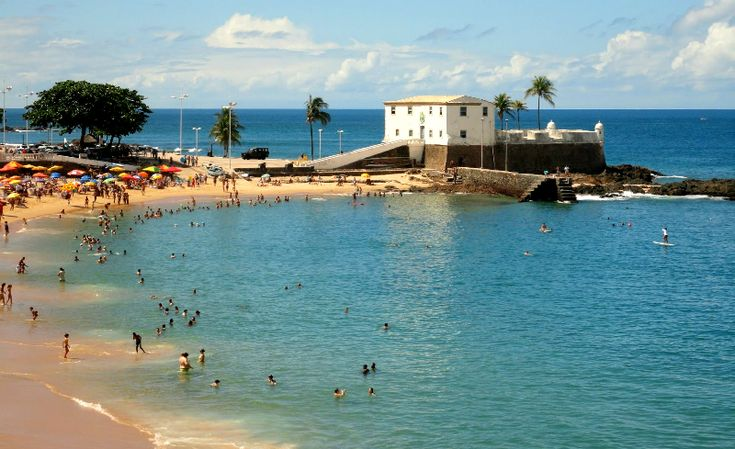
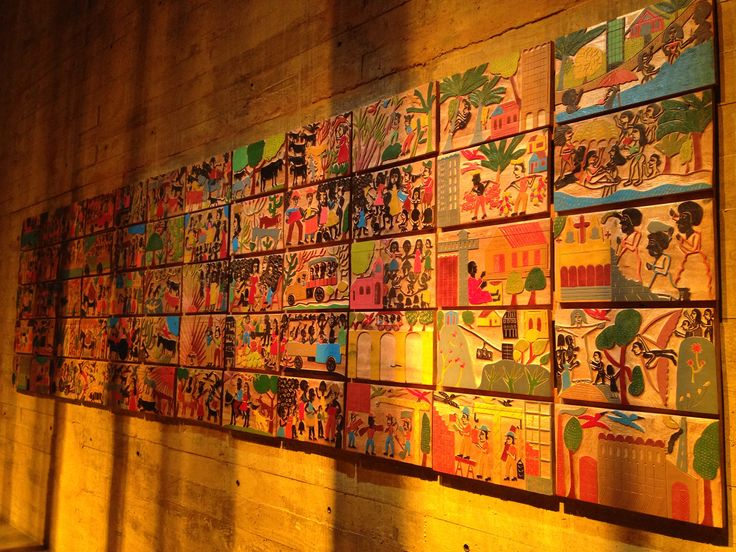
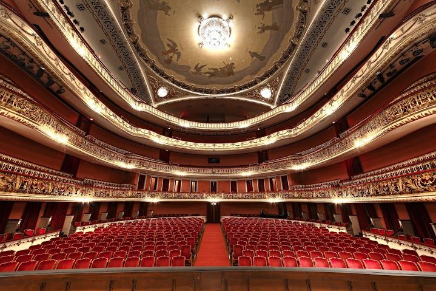
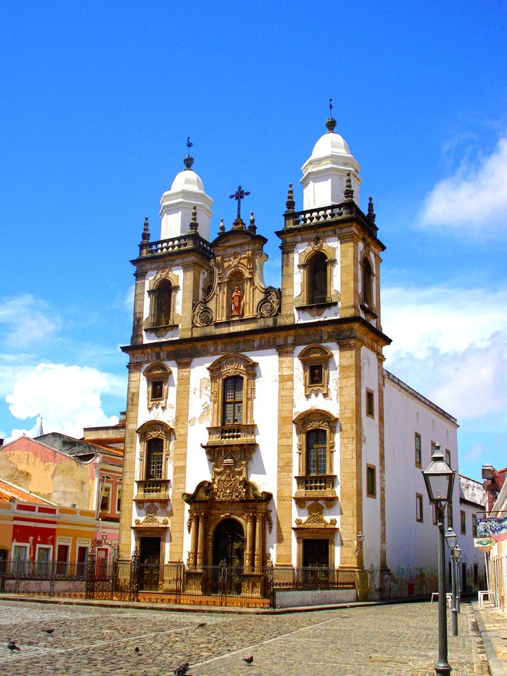
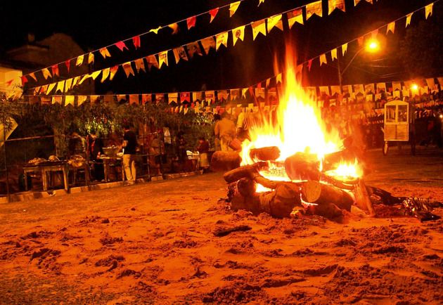
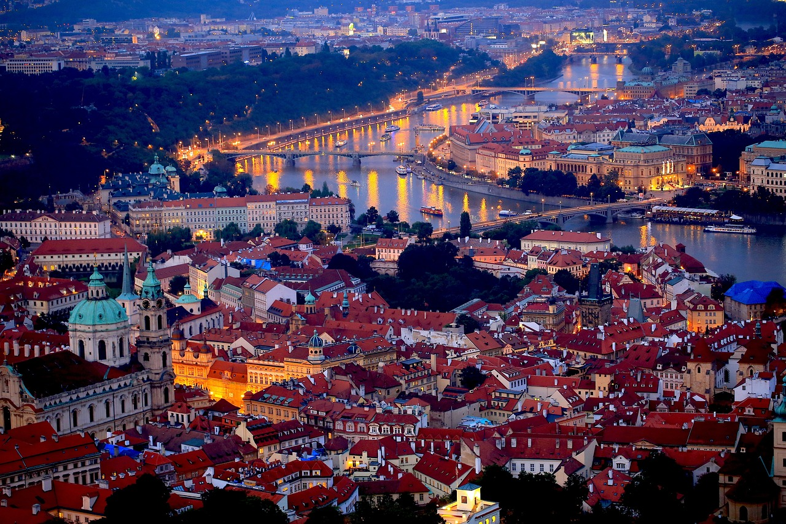
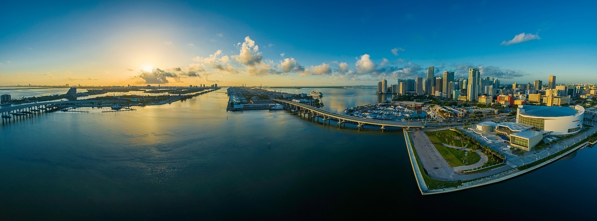
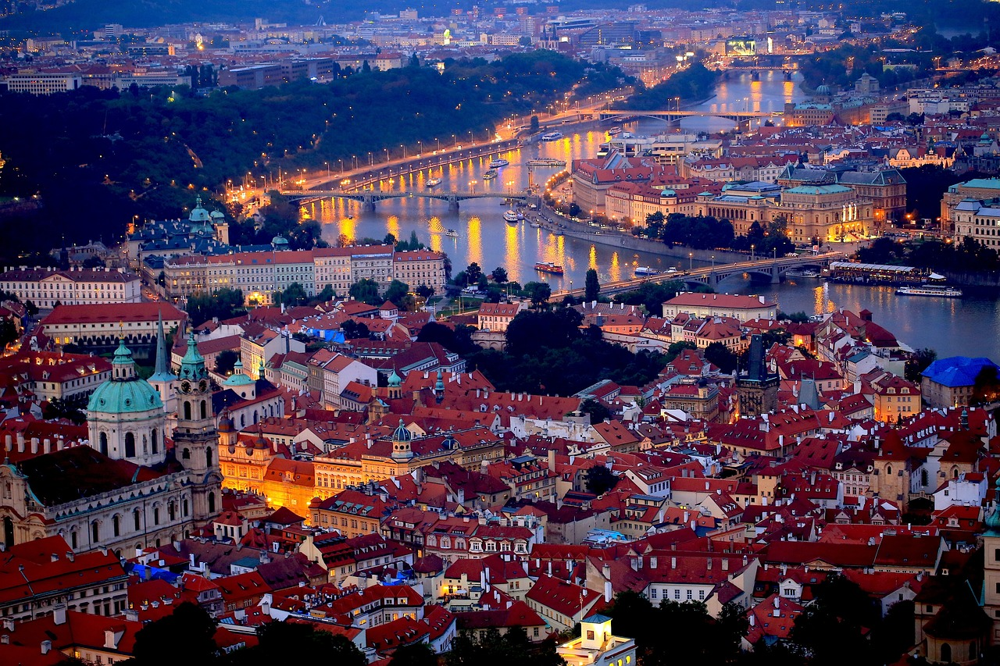
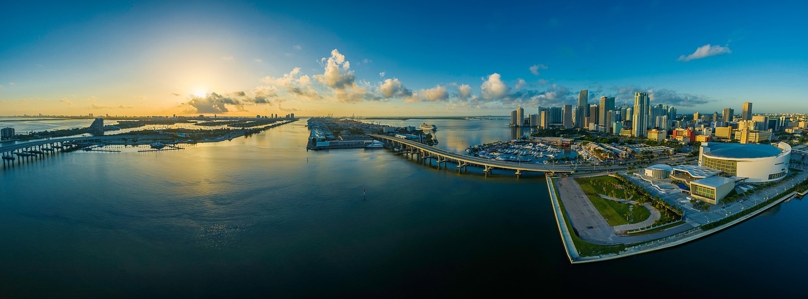

A Cidade em Detalhes
A cidade de Agrinho é um município localizado no interior do estado, conhecida por sua rica história e cultura.
Localização
A cidade está localizada a 200 km da capital do estado, em uma região de clima tropical.
Mapa da Cidade
A cidade do Projeto Agrinho 2024 está localizada em uma região de clima temperado, com uma temperatura média anual de 20°C. A cidade está situada a uma altitude de 500 metros acima do nível do mar, o que proporciona uma vista deslumbrante dos arredores.
A cidade está localizada a 100 quilômetros da capital do estado, com acesso fácil por meio de rodovias modernas e ferrovias. Além disso, a cidade está situada a 200 quilômetros do aeroporto internacional mais próximo, o que facilita o acesso aos visitantes.
Recursos Naturais
A cidade do Projeto Agrinho 2024 está localizada em uma região rica em recursos naturais, como água, solo fértil e florestas. A cidade está situada próxima a um rio, o que garante acesso a água em abundância para irrigação e outros usos.
Além disso, a cidade está situada em uma região de solo fértil, o que permite a produção de uma variedade de culturas e a criação de gado. A cidade também está cercada por florestas, o que proporciona recursos naturais adicionais, como madeira e frutas silvestres.
Infraestrutura Moderna
A cidade do Projeto Agrinho 2024 está equipada com infraestrutura moderna, como água encanada, esgoto, energia elétrica e internet de alta velocidade. A cidade também possui uma rede de transporte moderna, com ônibus, táxis e outros meios de transporte.
Além disso, a cidade possui uma variedade de serviços, como escolas, hospitais, restaurantes e lojas. A cidade também possui um centro de convenções, um teatro e outras atrações culturais.
A cidade do Projeto Agrinho 2024 é uma cidade moderna e bem localizada, com acesso fácil a recursos naturais e infraestrutura moderna. Aqui, você encontrará tudo o que precisa para uma vida confortável e agradável.
População
A cidade tem uma população de aproximadamente 50.000 habitantes, com uma densidade demográfica de 100 hab/km².
A população de Agrinho é composta por aproximadamente 50.000 habitantes, com uma distribuição etária diversificada. A distribuição etária da população de Agrinho é apresentada no gráfico acima, com uma concentração de jovens e adultos em idade produtiva. A composição étnica da população de Agrinho é apresentada no gráfico acima, com uma diversidade de grupos étnicos. A densidade populacional de Agrinho é de aproximadamente 2.500 habitantes por quilômetro quadrado. O IDH de Agrinho é de 0,75, considerado alto em relação à média nacional. A taxa de crescimento populacional de Agrinho é de 2% ao ano, considerada moderada em relação à média nacional.População
Distribuição etária

Composição étnica

Densidade populacional

Índice de desenvolvimento humano (IDH)
Taxa de crescimento populacional
Economia
A economia da cidade é baseada na agricultura, com destaque para a produção de frutas, legumes e cereais.
Economia
A economia de Agrinho é diversificada e em crescimento, com uma base sólida em setores como agricultura, indústria e serviços.
PIB (Produto Interno Bruto)
O PIB de Agrinho é de aproximadamente R$ 10 bilhões, com uma taxa de crescimento anual de 4%.

Setores econômicos
-
Agricultura
30% do PIB

-
Indústria
25% do PIB

-
Serviços
45% do PIB

Emprego e renda
A taxa de desemprego em Agrinho é de 5%, com uma média salarial de R$ 3.500.

Investimentos e infraestrutura
Agrinho recebeu investimentos de R$ 500 milhões em infraestrutura nos últimos 5 anos, incluindo a construção de rodovias, aeroportos e portos.

Turismo
A cidade oferece uma variedade de atrações turísticas, incluindo praias, parques e museus, atraindo visitantes de todo o país.
Turismo
Agrinho é um destino turístico atraente, com uma variedade de atrações naturais, culturais e históricas.
Atrações naturais
-
Parque Natural da Serra do Mar
Um parque natural com mais de 10.000 hectares de floresta atlântica, com trilhas para caminhadas e cavalgadas.

-
Praia do Porto
Uma praia de 5 km de extensão, com águas cristalinas e areia branca.

Atrações culturais
-
Museu de Arte de Agrinho
Um museu que abriga uma coleção de obras de arte moderna e contemporânea.
 -
Teatro Municipal
Um teatro que oferece uma programação diversificada de espetáculos de teatro, dança e música.

Atrações históricas
-
Forte de São João
Um forte histórico do século XVIII, que abriga um museu e oferece vistas panorâmicas da cidade.
-
Igreja Matriz de Agrinho
Uma igreja histórica do século XIX, com uma arquitetura neoclássica e um interior ricamente decorado.

Eventos e festivais
-
Festa de São João
Um festival que ocorre em junho, com música, dança e comida típica.
 -
Festival de Música de Agrinho
Um festival que ocorre em outubro, com concertos de música clássica e popular.

Galeria de Fotos
 


